Manger.
du petit-déj au goûter
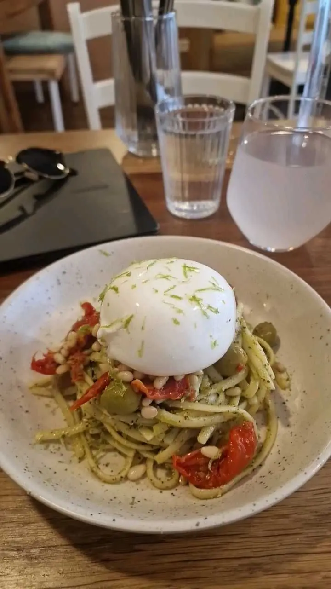
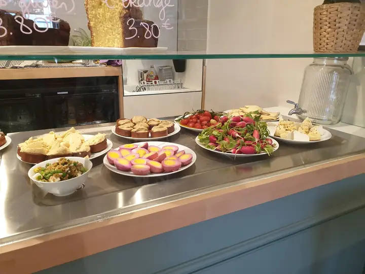
Une carte courte qui change chaque semaine : salades, tartines, quiches, soupes, plats chauds et buns. Tout est fait ici, avec des produits locaux et bio.
Voir des assiettesLun–ven · 8h45–18h
Café & Ateliers
Manger. Siroter. Créer.
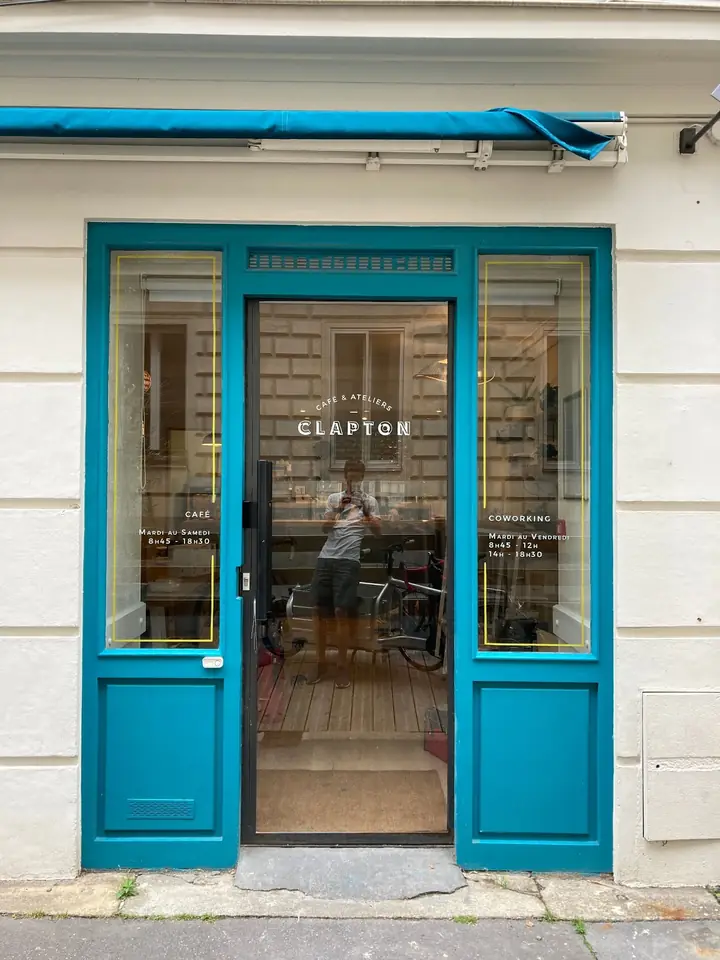
Un coffee shop lumineux à deux pas de la place Aristide-Briand. Cuisine maison, de saison, locale & bio, du petit-déj au goûter — et des ateliers pour mettre les mains dedans.
du petit-déj au goûter


Une carte courte qui change chaque semaine : salades, tartines, quiches, soupes, plats chauds et buns. Tout est fait ici, avec des produits locaux et bio.
Voir des assiettesau chaud, en travaillant
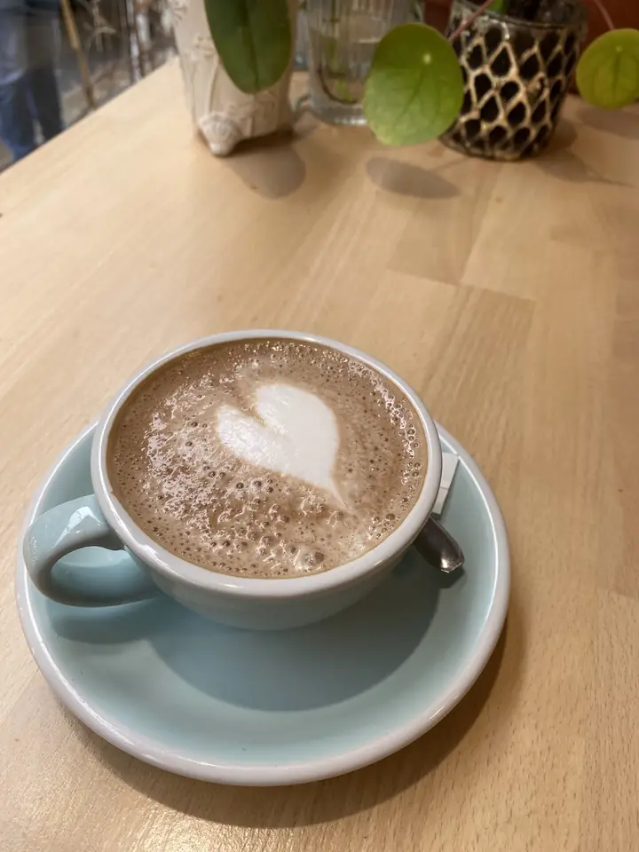
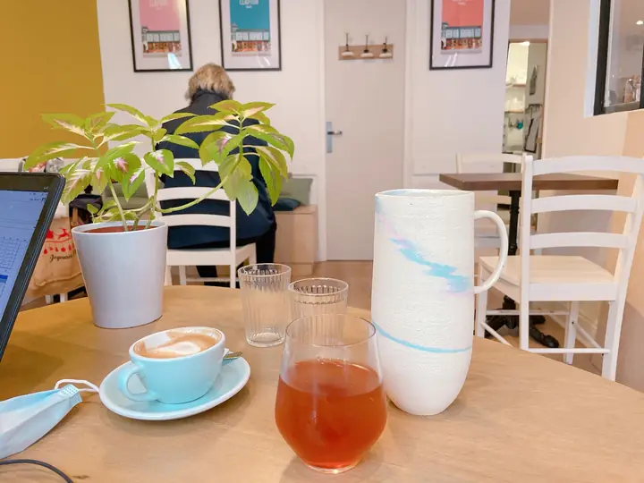
Café de spécialité, chaï latte, thés et infusions, et des boissons maison : kéfir, ginger beer, kombucha, thé glacé. Lait d'avoine sur demande.
Voir l'ardoiseon peint, on grave, on lit
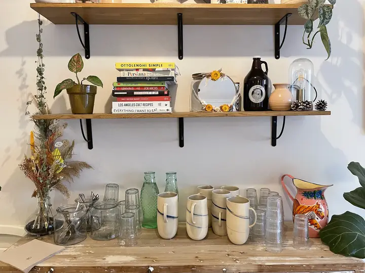
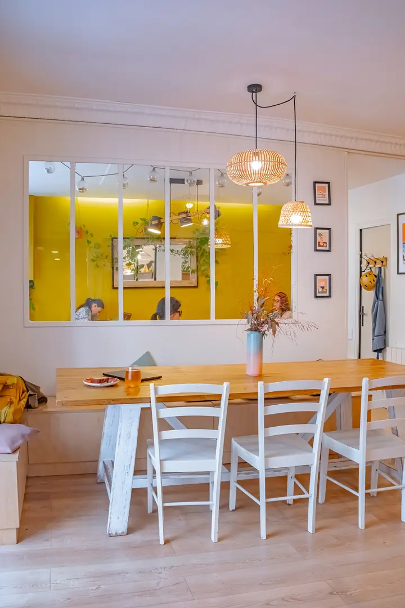
Aquarelle, linogravure, tufting, ateliers parent-enfant, yoga & book club : le Clapton se transforme en atelier, en petit comité.
Les prochains ateliersLa carte
La carte change chaque semaine, au rythme du marché. Quelques assiettes croisées sur l'ardoise :
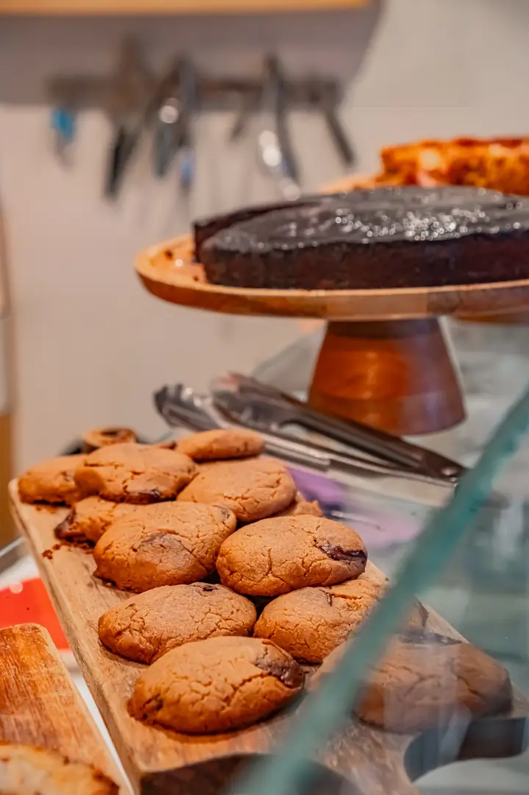
+ l'heure du goûter
Cakes, cookies, gâteaux… toutes les pâtisseries sont faites ici, comme le gâteau aux pommes caramélisées & pâte de noisette.
Plats de 9,80 € à 13,50 € · sur place ou à emporter · menu de la semaine en story sur Instagram
Kéfir · Ginger beer · Kombucha · Thé glacé 33 cl
Prix en euros, relevés sur l'ardoise du café — c'est elle qui fait foi.
Les ateliers
Des ateliers créatifs en petit comité, souvent avec des artistes du coin. Débutant·es bienvenu·es : le programme, les tarifs et les places restantes sont annoncés sur Instagram.
À venir
27nov.
11déc.
Pain d'épices, chocolat chaud, sucres d'orge : on peint ses cartes de fin d'année avec @bea_quarelle.
12déc.
Samedi de 10h à 13h : une séance de yoga, un échange autour des livres, un goûter. Places limitées.
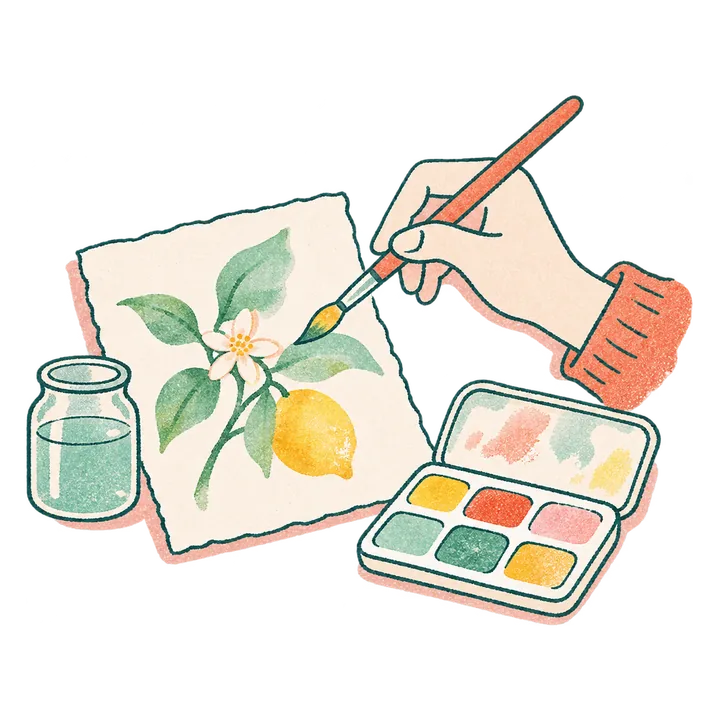
Botanique, cartes, carnets. Niveau débutant.
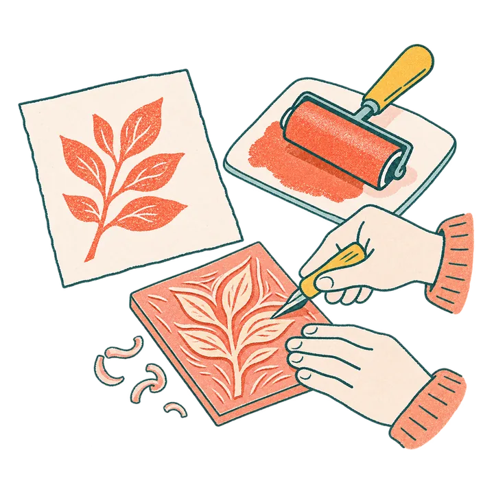
Graver, encrer, imprimer sa matrice.
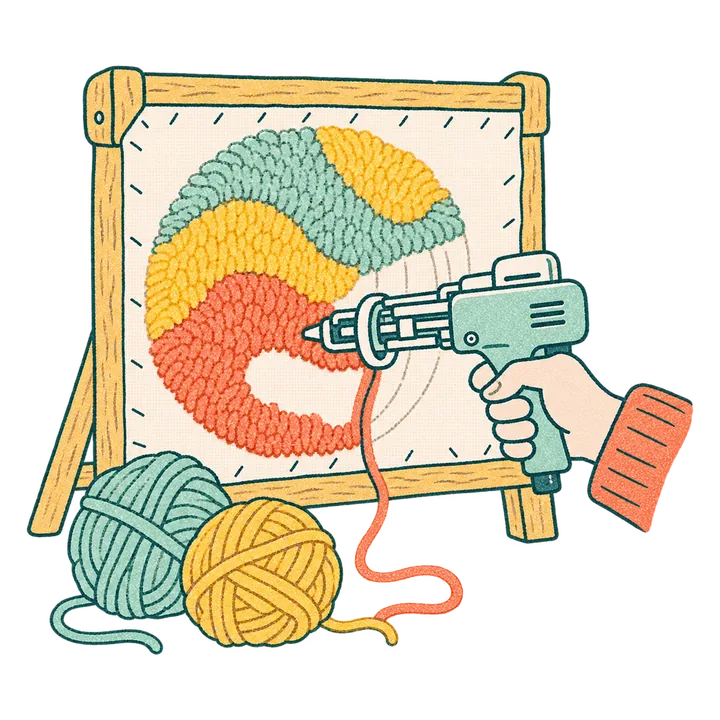
Laine, couleurs, et un tapis rien qu'à soi.
En binôme, petit·es & grand·es ensemble.
Un livre, des avis, du thé. Parfois avec yoga.
Vous animez un atelier ? Le Clapton accueille aussi des intervenant·es. Écrivez-nous.
Le lieu
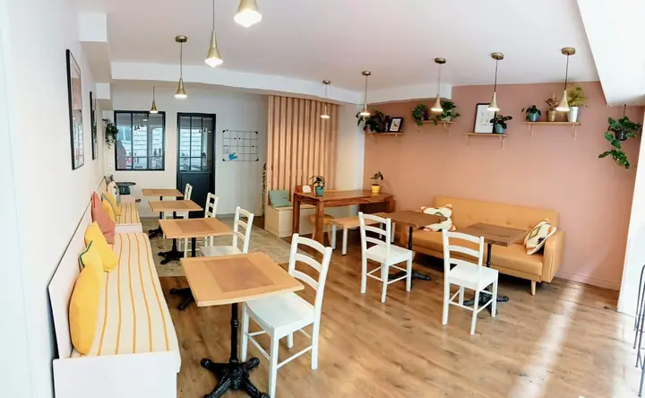
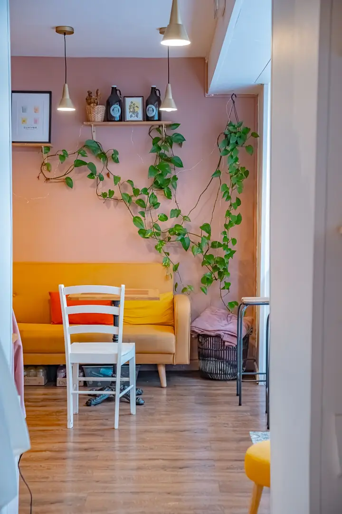
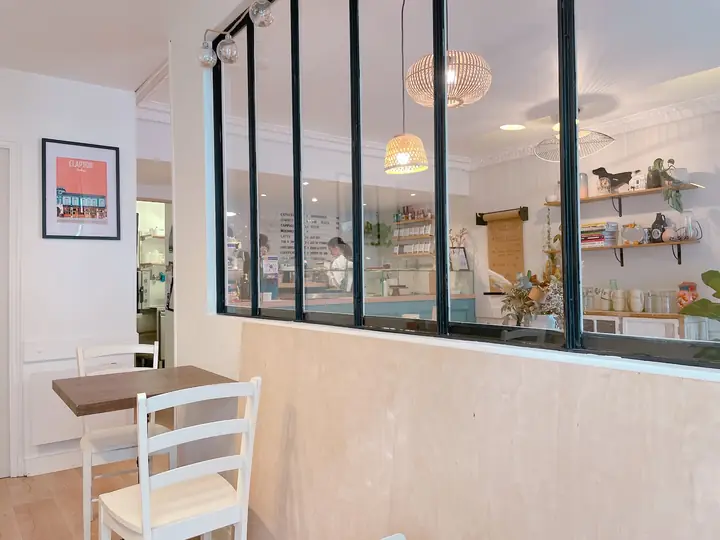
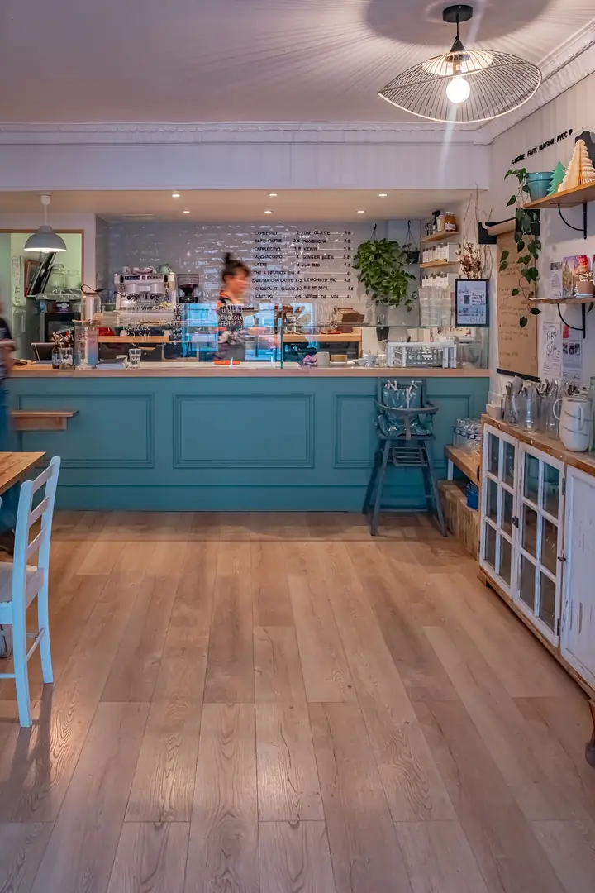
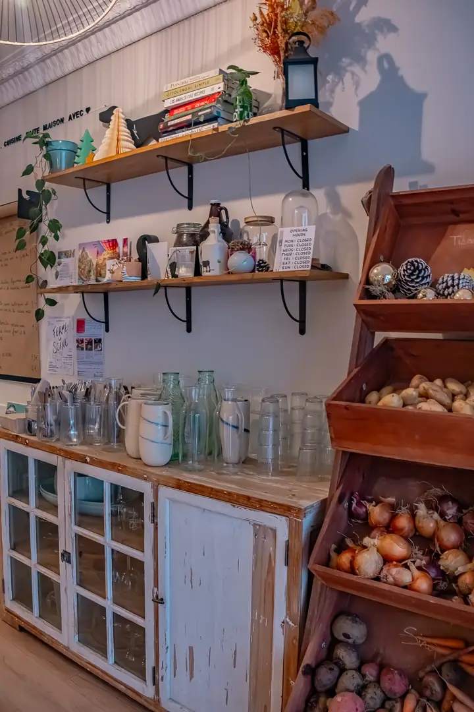
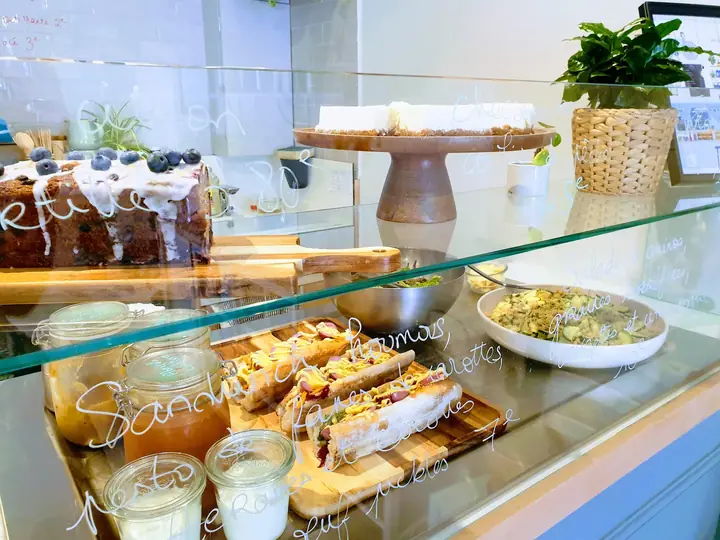
4,9/5
« Superbe endroit ! Cosy, personnel très gentil, prix abordable. »Adele
« Très belle découverte à Nantes ! Nous avons très bien mangé. »Yann
« Chaleureux, cocooning, confortable, spacieux. »Avis Facebook
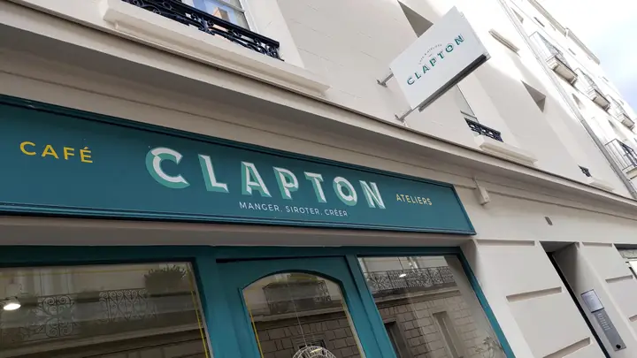
Venir
44000 Nantes · quartier Copernic